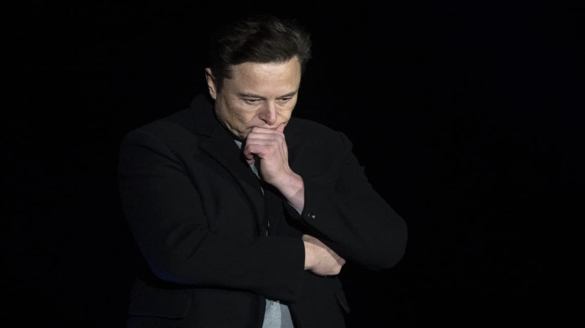

Clique para mais informações da noticia
ELON MUSK DESISTE DE COMPRAR TWITTER
Desistência do processo

Após meses de debates, a aquisição do Twitter pelo bilionário Elon Musk não vai acontecer.
Na última sexta-feira, o executivo anunciou oficialmente que desistiu do acordo,
que estava avaliado em cerca de US$ 44 bilhões.Segundo os documentos enviados por Elon Musk à SEC,
órgão de negócios dos Estados Unidos, o principal motivo para a desistência do negócio é
a questão dos bots e contas falsas na plataforma. Enquanto um relatório do Twitter aponta
que apenas 5% dos perfis da rede social são falsos, uma análise feita pela equipe do
bilionário aponta que o número é maior.
Devido ao problema dos bots, Musk também disse que a rede social "não cumpriu" seus deveres para fechar o negócio, o que levou ao cancelamento do acordo. "O Twitter não cumpriu suas obrigações contratuais. Por quase dois meses, Musk buscou os dados e informações necessários para 'fazer uma avaliação independente da prevalência de contas falsas ou spam na plataforma do Twitter", diz o documento enviado pelo bilionário à SEC.
Clique para mais informações da noticia
Twitter vai processar
Em um comunicado lançado após Elon Musk desistir da compra, o Twitter revelou que pretende travar uma batalha judicial com o bilionário. O objetivo da rede social é fazer o bilionário cumprir o acordo, ou pelo menos pagar o que foi prometido em caso de cancelamento do contrato.
Uma das cláusulas do acordo definido entre as partes garante US$ 1 bilhão em caso de desistência do negócio. No entanto, como Musk alega que o Twitter também violou obrigações contratuais, a tendência é que o bilionário e os responsáveis pela rede social se encontrem na corte para resolver o assunto.